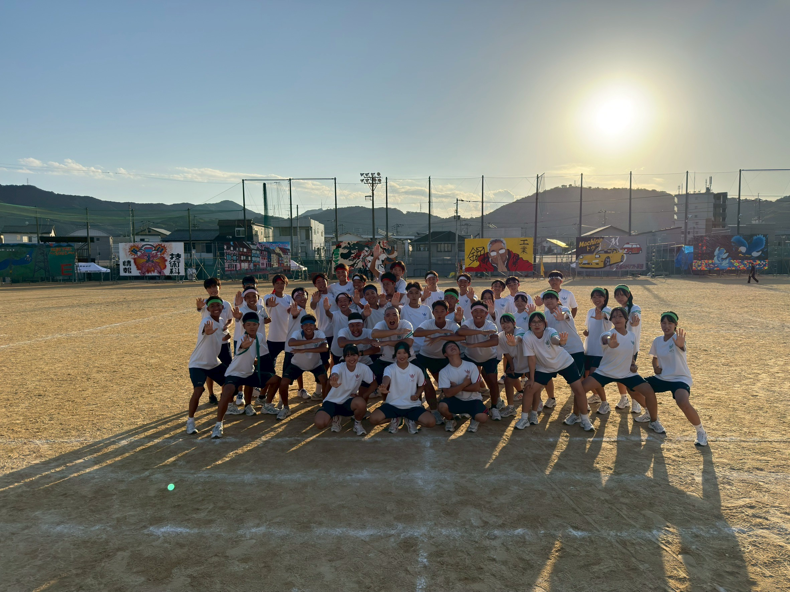

KOCHI KOGYO ROWING CLUB
高知工業高等学校 漕艇部 女子
高知工業漕艇部は、日々の練習に励み、10年連続でインターハイに出場しています。
創部12年目。現在では高知県最大の部員数を有し、実力もNo.1！毎年全国大会へ出場し、高知県のボートシーンを牽引しています。

ボートとは、主に高校から始めるスポーツ。スタートラインに並ぶ全国のライバルたちと、横一線で勝負が始まります！
水面を滑るように進むボート。この疾走感は、一度味わうと病みつきになること間違いなし！
創部12年目にして高知県最大の部員数を誇り、実力もNo.1。毎年、全国の舞台で戦っています。

１人で漕ぐ競技。ボート競技では唯一の個人競技。精神強者が勝つ。

２人で息を合わせて漕ぐことで、かなりのスピードが出る。

４人で漕ぎ、舵手が1人。高校競技で最速であり、花形種目。